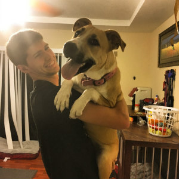
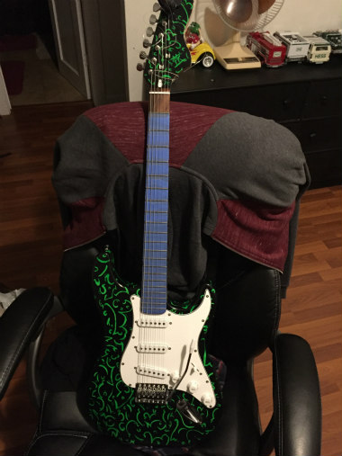

| ABOUT ME | HOBBIES | LIFE GOALS | FIELD REPORT | VIDEOS |
I am currently a full-time college student at Florida Gulf Coast University, this is my first year attending this college and it has been enjoyable so far. I am mainly a cheerful and positive person and like to joke around. Laughter is needed in life and if it wasn't, I would not know what to do with myself. I am a dog person at heart and I will always be one. Dogs are the most loving companions that anyone could have. Dogs are just always happy and so pure. Cats are not so pure. The major I am going for is Software Engineering. I chose this major because I was always interested in programming and coding. I took some engineering classes in high school, they were very informative but barely touch the subject of programing and coding. I may not be as experienced as some others going into this major, but I won't let that stop me from continuing on this journey.
 I have always been a hands-on kind of a person. I used to draw sketches a lot when I was younger but now I do not do it as often. However, I like to design and imagine as I did as I was younger. I used to spray paint patterns and designs on items of mine that I felt were too plain. I was fortunate to have older gentleman to teach me the skills of woodworking. I worked with him for almost 2 years. From the time spent working and learning the trade of woodworking, I gained inspiration for the future to design guitars or basses from old and abandon wood.
 After graduation, I plan on finding a job as soon as possible. Once I do, I can start saving up for future expenses, such as a place of my own. I also want to give back to my parents for helping with so much by giving a portion of my income to them. When I do get a place of my own, I would like also get myself a dog to keep me company. On the side I will like to start marking guitars and basses as a hobby and if possible try to make money off of it.